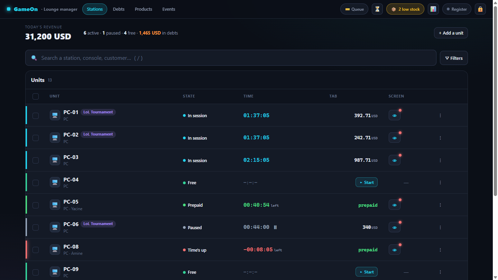
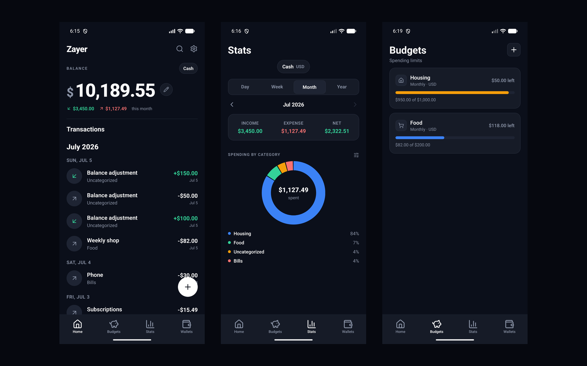

Hi. I make things.
I'm Yacine, a full-stack developer. Web, desktop, mobile, whatever fits. Starting something is easy. I'm here for the finishing.
The work

GameOn Management
2026Offline-first management for a gaming lounge. Timed sessions on PCs and consoles, a snack POS, cash/card/debt checkout, and a per-PC lock agent. Runs with the internet completely unplugged: no cloud, no accounts, no fees. ~255 automated tests.
ReactFastAPISQLitePySide6View source ↗
Zayer Budgeting
2026A fast, private, offline-first budgeting app for tracking money across wallets and currencies. Balances are derived from the ledger, never edited behind your back. No accounts, no sync, everything on-device. 184 tests passing.
React NativeExpoSQLiteView source ↗Built with
I build the thing you keep almost shipping.
Startups come to me with a clear idea and nobody free to build it. I take it from a rough brief to something live.
Something live in three weeks beats something perfect in three months. The useful feedback only starts once people can touch it.
If a feature is a bad idea I'll say so before I build it, not after you've paid for it.
Pages that load before you notice. Forms that don't lose your work. If it works but feels bad, it isn't finished.
Chess, gaming, long runs, and cooking things I have not earned the right to attempt.